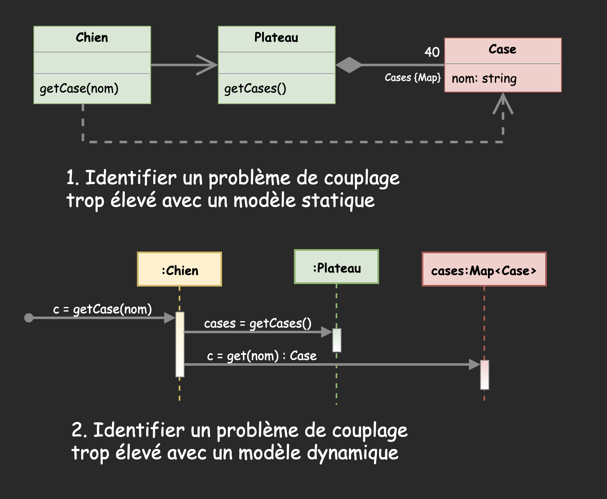

General Responsibility Assignment Software Patterns or Principles
Eric Demers, Michel Gagnon et Lévis Thériault
Designing objects with responsibilities
Craig Larman, Applying UML and Patterns 3rd Edition, chap. 17
Patron créateur
Quelle classe devrait avoir la responsabilité de créer les 40 cases?
Prononcez-vous:
Préférez-vous l'option A ou l'option B?
Patron créateur et diagramme UML
Patron expert en information
Quelle classe devrait avoir la responsabilité de retourner une case identifiée par son nom?
Patron expert en information et diagramme UML
Patron faible couplage
Patron faible couplage et diagramme UML
Patron contrôleur
Patron contrôleur et diagramme UML
Forte cohésion
Patron forte cohésion et diagramme UML